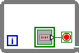

Owning Palette: Execution Control Express VIs and Structures
Requires: Base Development System
Repeats the subdiagram inside it until the conditional terminal, an input terminal, receives a particular Boolean value. When you place this While Loop on the block diagram, a stop button also appears on the block diagram and is wired to the conditional terminal.

If you select a While Loop on the Structures palette and place it on the block diagram, a stop button does not appear.